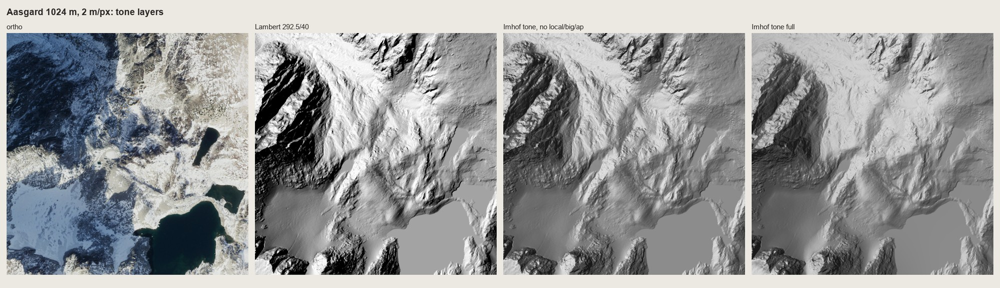
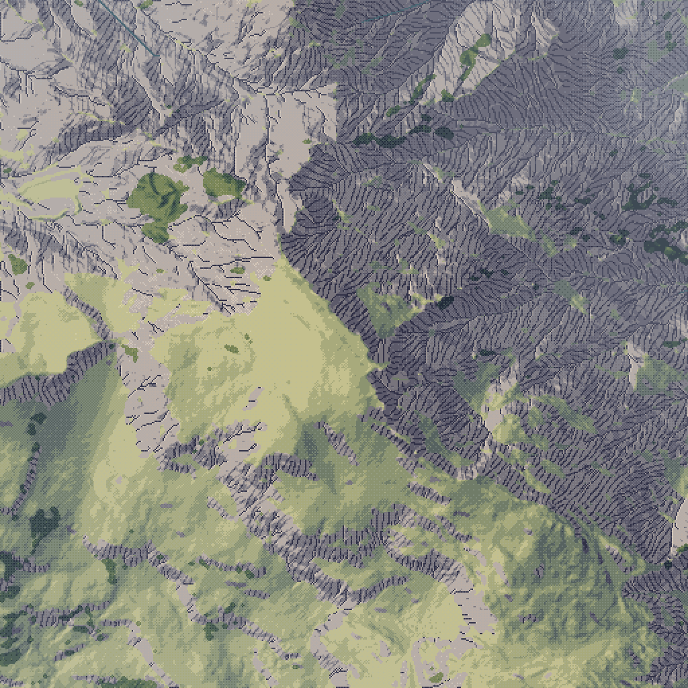

1. Imhof's light
Chapter 9 of the book, "Shading and Shadows" (p.159-212), in one function: imhof_tone in code/imhof.py. This is the part of my study that carried whole.
The one rule to take away
Flat ground gets a medium grey (p.171). "Without this middle tone, no direct three-dimensional effects can be achieved ... illuminated slopes would scarcely be distinguishable from level areas." In pixels: flat ground is the middle step of the ramp, lit slopes step up from it and shaded slopes step down.
The proof is Imhof's own Fig.33: one cone in a ring groove, drawn eight ways. The halftone plate is lost in our scan, but the text describes every panel, so I rebuilt it at 96×96 px (code/e1_cone.py):

The cone in a ring groove, 3×. (1) Slope shading, "the steeper the darker": the cone and the groove get one tone. (3) Contours: cone or crater? (4, 5) Layer tints: a pipe, a tunnel. (7, 8) Shadow hachures and combined shading, with flats left white: the lit wall of the groove is darker than the flat beside it, Imhof's "shadow reversal". (6) Oblique shading over a mid-tone flat: you see the form without a key. (9) Lambert, i.e. GIS hillshade, i.e. Wiechel's 1878 formula H = cos ε: panel 6 without the diffuse light and without flats at the middle step. Its shadow side goes black.
The mapping from tone to ramp that does it:
def tone_to_steps(t, nsteps=7, mid=None, lit_top=None, shade_bottom=0.0):
"""Map tone [-1,1] onto ramp positions: flat = mid step, lit up to lit_top, shade down to bottom."""
mid = (nsteps - 1) * 0.55 if mid is None else mid
lit_top = nsteps - 1 if lit_top is None else lit_top
return np.where(t >= 0, mid + t * (lit_top - mid), mid + t * (mid - shade_bottom))
mid is a little above the centre (3.3-3.4 of 0-6), because lit slopes need fewer steps than shaded ones: most of a mountain's modelling is on its shaded side.
The tone, rule by rule
imhof_tone(z, cell, **P) returns a tone in [-1, 1], with 0 the flat mid tone. Each of Imhof's rules is one parameter:
DEFAULT = dict(
az=292.5, # WNW: 'west ... like late afternoon sun' (p.183); upper-left for a north-up view
el=40.0, # base light elevation
local_dev=30.0, # max local light deviation, degrees (p.175)
landform_m=60.0, # scale (m) at which 'the landform' is read for local light & emphasis
el_flat=25.0, # light elevation on gentle ground (p.177: < 20 deg for undulating land)
el_steep_shade=55.0, # steep shaded slopes: higher light so they don't black out (p.177)
el_steep_lit=30.0, # steep lit slopes: flatter light so the steepest are lightest (p.177)
diffuse=0.25, # share of sky light: softness and transparency of shadows (p.168)
big_w=0.35, # large-form emphasis weight (p.187)
big_m=250.0, # scale (m) of the large forms (major watersheds)
ap_low=0.55, # aerial perspective: contrast at the lowest point relative to the highest (p.172)
gamma_lit=1.0, gamma_shade=1.0,
)
Direction: WNW, crossing the ridges, never along them
"One should avoid making the main direction of the light parallel to the more dominant direction of mountain ridges and valleys ... Generally one should select the direction of light to come from the north-west, west or south-west" (p.169). His own preference after fifty years is west or WNW, "not unlike the commonly observed effect of sunlight in late afternoon or evening" (p.183). South light, the true sun in the northern hemisphere, makes most viewers see the relief inside out. In our oblique and iso views the sun is a scene choice, but in the plan view of a region map az=292.5 is right.
Local light adjustment: nothing expressionless
Imhof's word is expressionless: a curved surface that receives one uniform tone, so its curvature is invisible (p.173). Under one parallel light, ridges that run along the light always are. His cure is to let the light "wander about, as it were, along the slopes and around the individual mountain masses", by at most 30°, and never differently on adjacent parallel slopes (p.174-175).
def local_light_az(z, cell, az, dev, landform_m):
zs = smooth(z, landform_m / cell / 2.0)
A = aspect_deg(zs, cell)
s = np.clip(slope_deg(zs, cell) / 15.0, 0, 1) # no adjustment on flats
d = ((A - az + 180) % 360) - 180 # facing relative to light, (-180, 180]
shift = dev * np.sin(2 * np.abs(d) * D2R) * s # >0 means: rotate the light toward A
return az + np.sign(d) * shift
Read it as: find each landform's facing on a surface smoothed to landform_m; how far is it from the light? A slope facing the light (d = 0) or facing away (d = 180) is already expressive, so sin(2d) leaves it alone. A slope lit side-on (d = 90) is pushed toward the light or away by up to dev. Because the facing comes from the smoothed surface, two neighbouring parallel gullies get the same bend, which is his condition.
Vertical angle: by slope and by side
"In flat, undulating terrain, a shallow angle of light, of less than 20° ... A greater angle, often of more than 45°, is required for steep, shaded slopes since, with a shallower angle of light, this whole terrain would become overshadowed. On steep illuminated slopes, however, a flatter angle of light is again recommended so that the steepest slopes appear the lightest" (p.177). That's three light elevations, chosen per pixel after a first lit/shaded test:
L0 = light_vec(az, P['el'])
facing = np.sum(n * L0, -1) - np.sin(P['el'] * D2R) # >0: faces the light more than flat ground
steep = np.clip((sl - 10) / 40, 0, 1)
el = np.where(facing >= 0,
P['el_flat'] + (P['el_steep_lit'] - P['el_flat']) * steep,
P['el_flat'] + (P['el_steep_shade'] - P['el_flat']) * steep)
L = light_vec(az, el)
direct = np.sum(n * L, -1)
sky = n[..., 2] # diffuse sky: up-facing is lighter
I = (1 - P['diffuse']) * direct + P['diffuse'] * sky
I_flat = (1 - P['diffuse']) * np.sin(el * D2R) + P['diffuse']
t = I - I_flat # 0 on flats: the mid tone
t = np.where(t > 0, t / (1 - I_flat + 1e-6), t / (I_flat + 1e-6)) # to [-1, 1]
The last two lines are the flat mid tone: tone is measured from flat ground, then stretched separately above and below it.
Large forms first
"On the light side of a major watershed one should lighten all local shadows to a certain degree. On the shaded side, however, one should strengthen them, the local illuminated areas being subdued further by application of a weak overall shadow which is not strong enough to destroy the detailed modulations" (p.187). A second, heavily smoothed surface carries the big form, added in with less weight where the local tone is already strong:
zb = smooth(z, P['big_m'] / cell / 2.0)
tb = np.clip(((normals(zb, cell) @ light_vec(P['az'], P['el'])) - np.sin(P['el'] * D2R)) / 0.5, -1, 1)
t = t + P['big_w'] * tb * (1 - 0.5 * np.abs(t))
The rock study's round 2 found the same thing independently ("masses first, then marks"). Imhof states it as a drawing rule.
Aerial perspective, by elevation
"In a map, high regions correspond to the foreground and lowland to the background. Hence, one should sharpen and increase the contrasts of light and shadow towards higher altitudes, but subdue them somewhat in the low lying regions" (p.172-173). Overdone, "slopes of equal gradient appear concave". In an oblique view real distance does this, but in plan and iso it's elevation:
h = (z - np.nanmin(z)) / (np.nanmax(z) - np.nanmin(z) + 1e-6)
t = t * (P['ap_low'] + (1 - P['ap_low']) * h)
Quantizing: Leonardo's hybrid area
Imhof's page on Leonardo is the most quoted in the chapter: "between light and dark there exists a hybrid area which is equally common to both, either as a bright shadow or a dim light. This you must seek" (p.185). It's easy to shade the steep dark slopes and leave the steep lit ones blank; "the critical part, however, is what lies between the two". And printing that turns the tones "either solid or non-existent destroys every form in the image". A 7-step ramp quantized hard does exactly that. So: flat inside a step, and ordered dither only in a narrow seam where a value falls between two steps.
def quantize(v, nsteps, seam=0.35, pattern=BAYER4):
H, W = v.shape
thr = np.tile(pattern, (H // pattern.shape[0] + 1, W // pattern.shape[1] + 1))[:H, :W]
lo = np.floor(v); f = v - lo
a = 0.5 - seam / 2
f2 = np.clip((f - a) / max(seam, 1e-6), 0, 1)
return np.clip(lo + (f2 > thr), 0, nsteps - 1).astype(np.int32)
This is the observation student's "dither only where a value falls between two colours", arrived at from the other side of the studio. Imhof's rule h, "sharp ridges require a sudden and crisp change from light to dark, while rounded landforms require softer shading transitions" (p.170), falls out of it for free: across a sharp ridge the tone jumps a whole step inside one pixel, so no seam forms; over a rounded one it passes slowly through the seam and dithers.
The haze bins need the same treatment. My first region painter quantized elevation into three hard haze bands, and their edges drew contour lines across the basin floor that aren't in the land (POST, nb124). quantize(..., seam=0.9) on the bin coordinate removed them.
On real terrain

nb122. 1024 m of the Enchantments at 2 m/px: NAIP ortho | Lambert | Imhof tone without local light, large forms or aerial perspective | full Imhof tone. Lambert's shaded side is black and its flats are one grey. The full Imhof tone keeps Dragontail's NE face one dark mass with its gullies readable inside it, and nothing goes black.

fig. Mount Index at 2 m/px (shown at 2×), with the colour recipe from page 4. The NE walls are one dark mass, and the SW slopes are lit. This is the frame a critic judged better than the lane's current render, which "shows a forest carpet and no mountain".
What didn't carry, and the limit
- Tone alone doesn't draw rock at 1 m/px. Quantized to 7 steps, the gentle granite beside the NE face became camouflage: islands of two steps (POST, fig region v3). That's the job of rock drawing, not of the tone.
- Omitting cast shadows, reflected light and highlights (p.171-172) is a map rule, for legibility. Our pictures may keep them. Imhof's own Walensee painting deepens its cast shadows.
- The crest break. The local light and the vertical angle both vary smoothly, so across a knife-edge crest the tone often changes over two or three pixels instead of one. That's the biggest single thing missing from my rock, and it's a tone problem: the tone should be decided per landform facet on each side of the crest line.